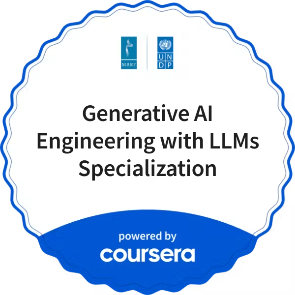
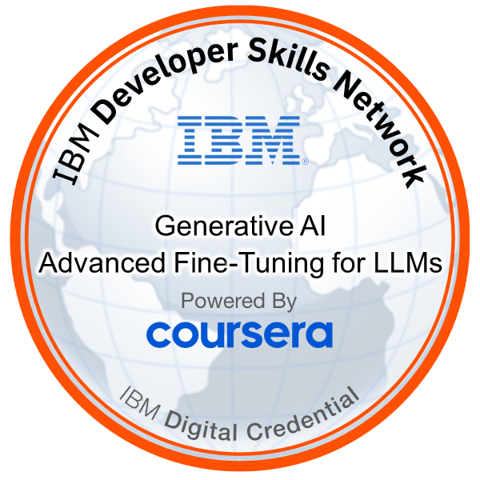
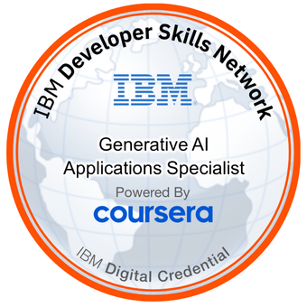
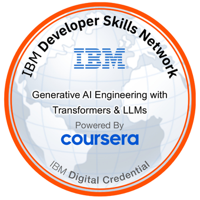
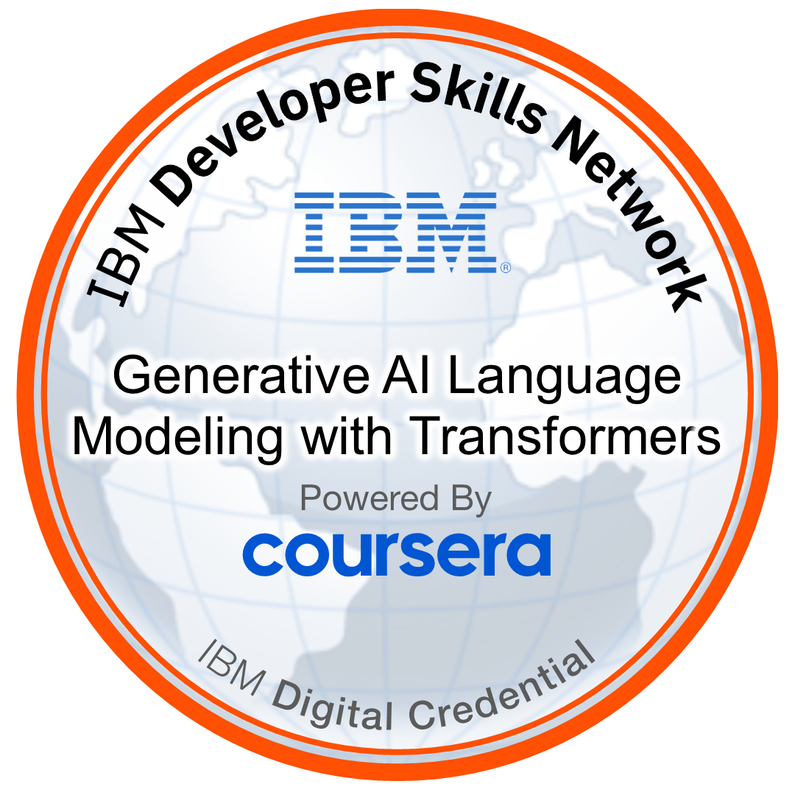
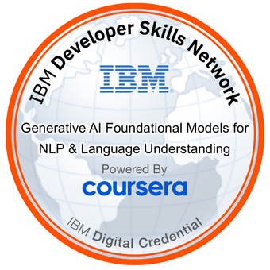
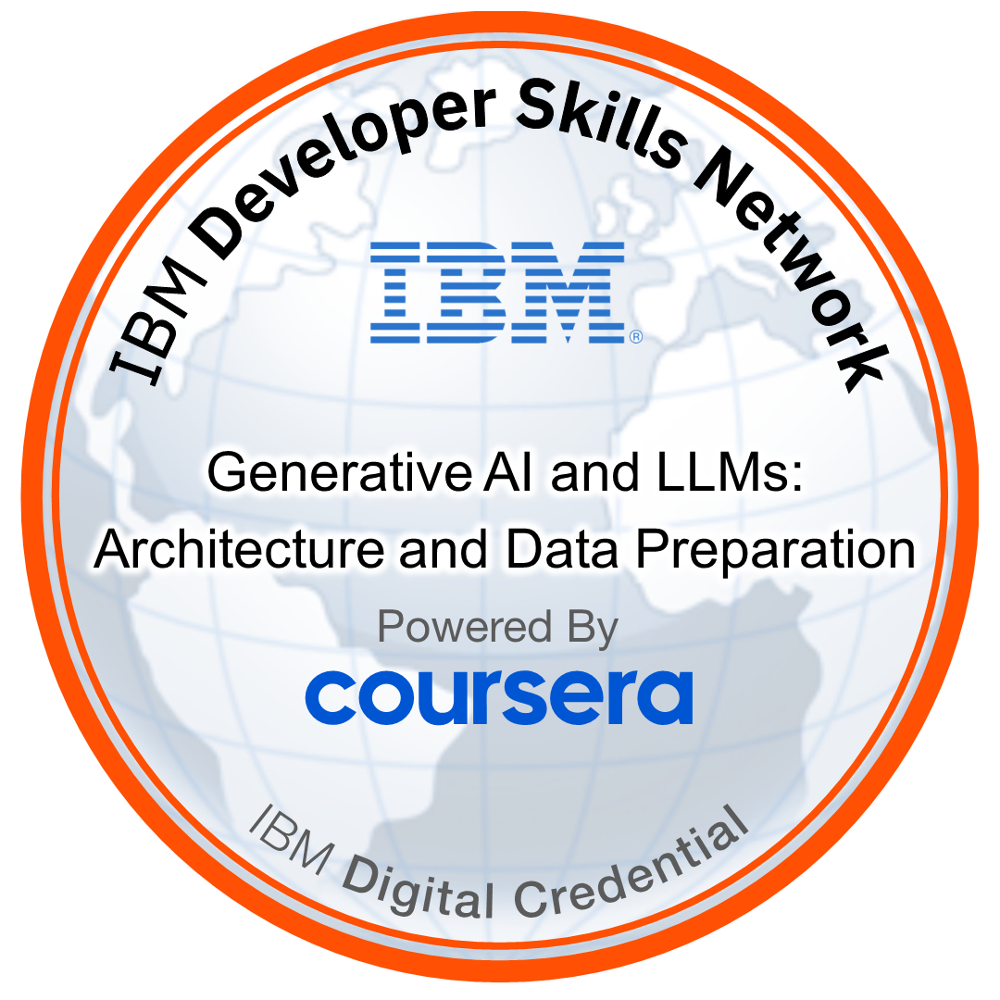

الذكاء الاصطناعي والبيانات
المساهمة في بيانات الذكاء الاصطناعي، وتقييم الاستجابات، ومراجعة جودة البيانات.
الشخص اللي ورا الشغل.
شغلي بيربط اللغة بالبيانات والتكنولوجيا. بساهم في شغل بيانات الذكاء الاصطناعي وتقييم المخرجات العربية، وبطوّر حلول رقمية لمشكلات عملية. وأسست Atwan AI Development وبقود شغلها في الحلول الرقمية المدعومة بالذكاء الاصطناعي والتكنولوجيا الموجّهة لاحتياجات الأعمال.
أسست وبقود Atwan AI Development، وشغل الشركة بيركّز على حلول رقمية مدعومة بالذكاء الاصطناعي وتكنولوجيا تخدم احتياجات الأعمال.
أحمد عطوان · مؤسس ومديرالتكنولوجيا قيمتها في المشكلة اللي بتحلّها، مش في وجودها وخلاص.
المساهمة في بيانات الذكاء الاصطناعي، وتقييم الاستجابات، ومراجعة جودة البيانات.
مراجعة اللغة العربية ووسم البيانات وتقييم المخرجات مع مراعاة السياق الثقافي.
مشروعات برمجية عملية بتبدأ من احتياج حقيقي في الشغل.
شغل بيربط اللغة والبيانات بحلول رقمية قابلة للاستخدام.
مشروعين حقيقيين: واحد بيخدم احتياج تجاري، والتاني في الإنتاج الإبداعي.
نظام لمحل فضيات بينظّم المخزون والمشتريات والمبيعات والتسعير في سير عمل واحد.
مشروع فيديو لقناة الحدث اليوم في مدينة الإنتاج الإعلامي، شمل التصوير والمونتاج والعمل الموسيقي.
شهادات الدورات الأصلية معتمدة من IBM ومقدّمة عبر Coursera. تقدر تفتح ملف الشهادة أو رابط التحقق الرسمي.
٨ شهادات / ٨ شاراتالصور الأصلية للشارات. التاريخ بيظهر بس لو موثّق، وممكن يختلف عن تاريخ الشهادة.







كلية الآداب
قسم الدراما والنقد المسرحي
وزارة القوى العاملة — مصر
المهنة المسجّلة: IT E-Services Business Observerوزارة القوى العاملة — مصر
المهنة المسجّلة: IT E-Services Business Observer · التصنيف: عامل ماهرلو عندك فرصة شغل أو تعاون أو حابب تتكلم عن اللغة والبيانات والحلول الرقمية، ابعتلي.